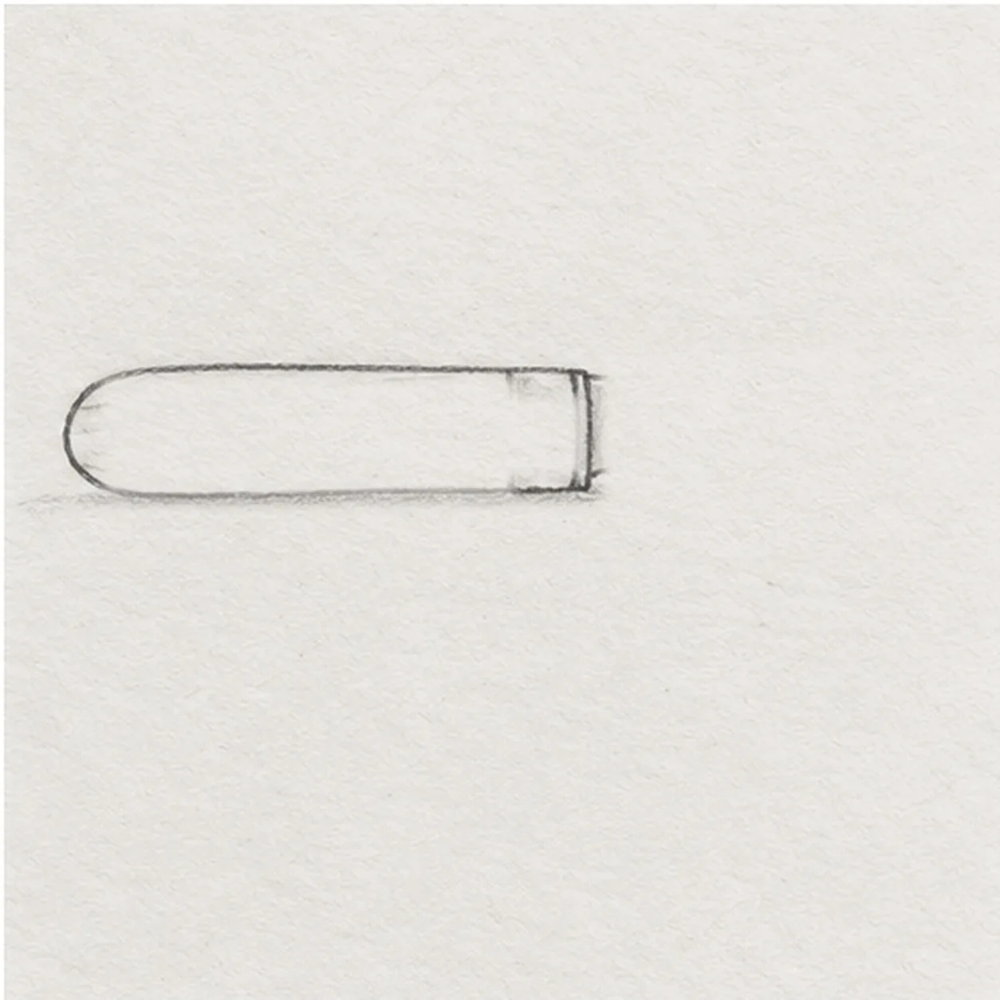
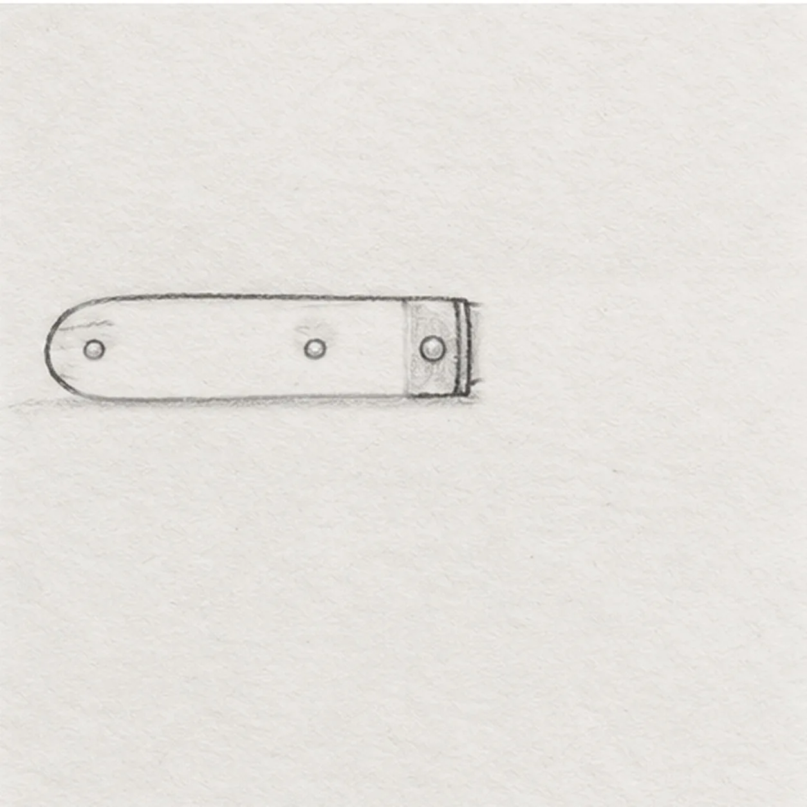
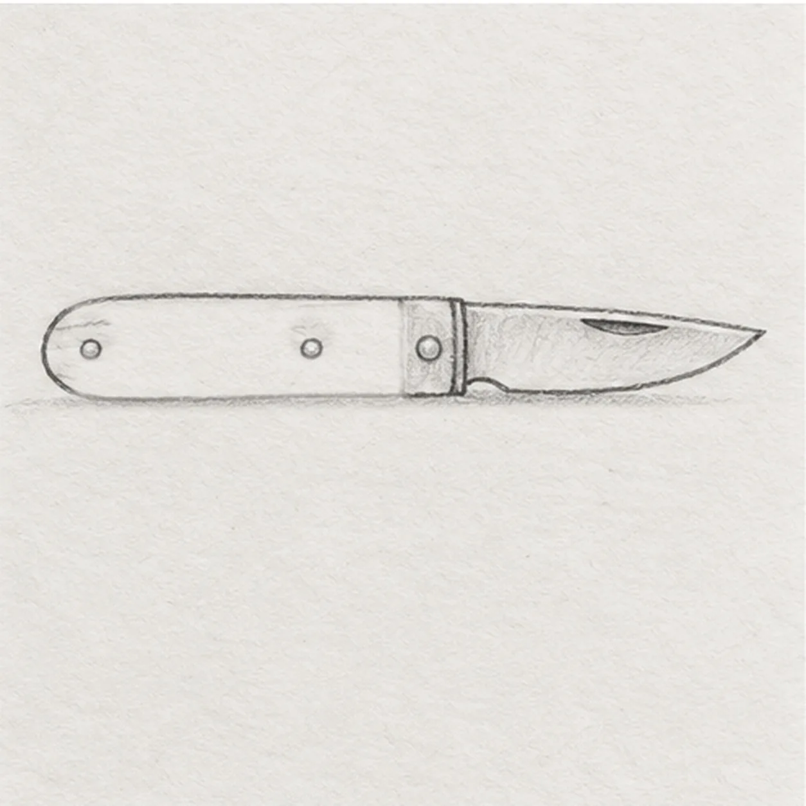
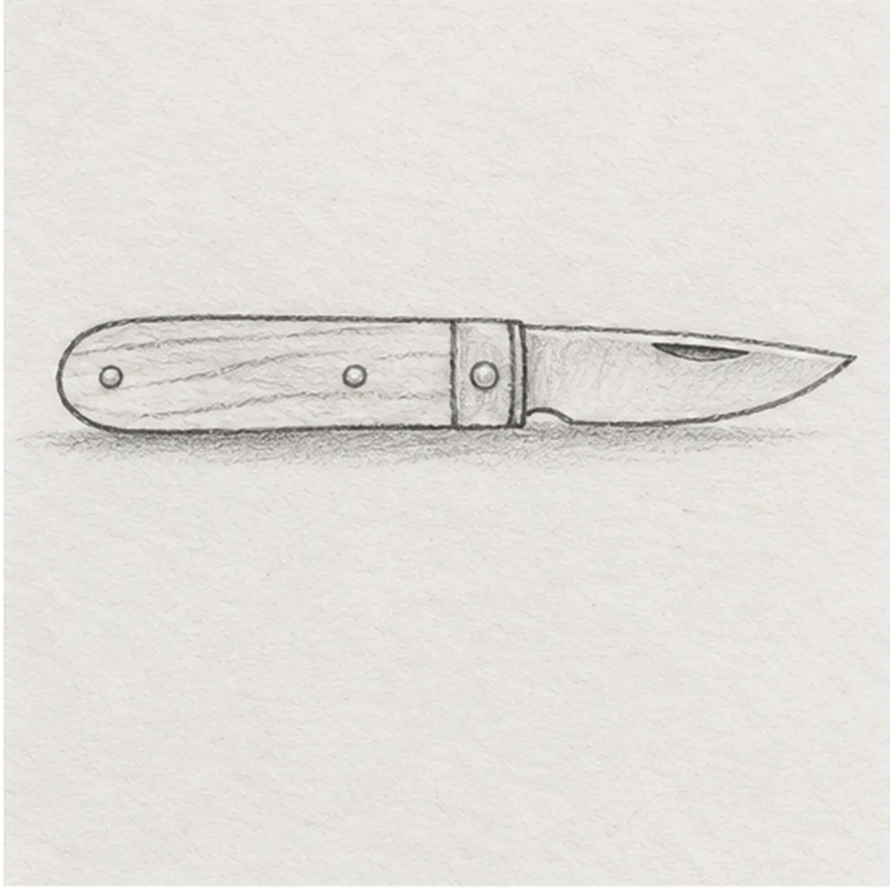

Pencil ready?
Let's draw an open pocketknife
Treat this as one small practice round: build the subject lightly, notice the shapes, then darken only the lines that help the finished sketch.
-
01

Shape the handle and bolster
Draw a long narrow handle across the lower middle, rounded on the left and squared at the right. Wrap a narrow metal bolster band around its right end; leave the page open to the right for the blade.
Sketch tip: Keep the handle low and long; the bolster marks the hinge and the blank space to the right is for the blade.
-
02

Place the three fasteners
Center a small pivot circle inside the metal band. Add exactly two smaller rivet circles along the wooden handle, one near the rounded left tip and one halfway toward the bolster.
Sketch tip: Space the two smaller handle circles apart and keep the pivot centered in the metal band.
-
03

Open the blade
From the bolster, pull a nearly straight blade back to the right and taper it to a point. Curve the lower cutting edge back to the hinge, then add one short dark nail nick near the upper blade edge.
Sketch tip: Keep the blade about two thirds as long as the handle, with the nick inside its upper edge.
-
04

Add grain and a ground shadow
Follow the handle with three broad, wavering wood-grain strokes. Sketch one broken graphite shadow directly below the handle and blade, leaving the blade point and all three fasteners clear.
Sketch tip: Let the grain follow the handle length and break the shadow below, so the knife stays light on the page.
-
05

Shade the pocketknife
Layer muted warm brown on the existing wooden handle and soft graphite along the metal bolster and blade underside. Deepen the same rivets, nick, and shadow without adding new parts.
Sketch tip: Use the side of the pencil for metal, leaving a slim white blade highlight and visible paper tooth.